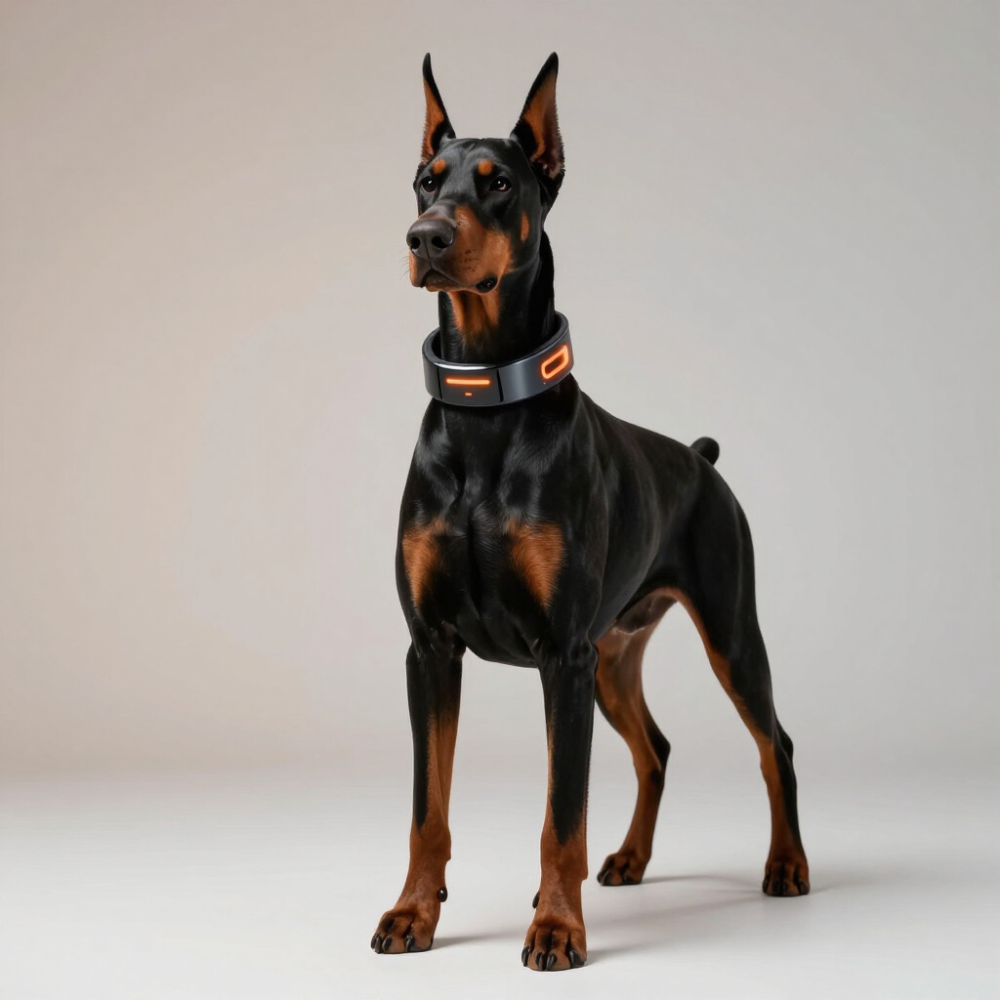
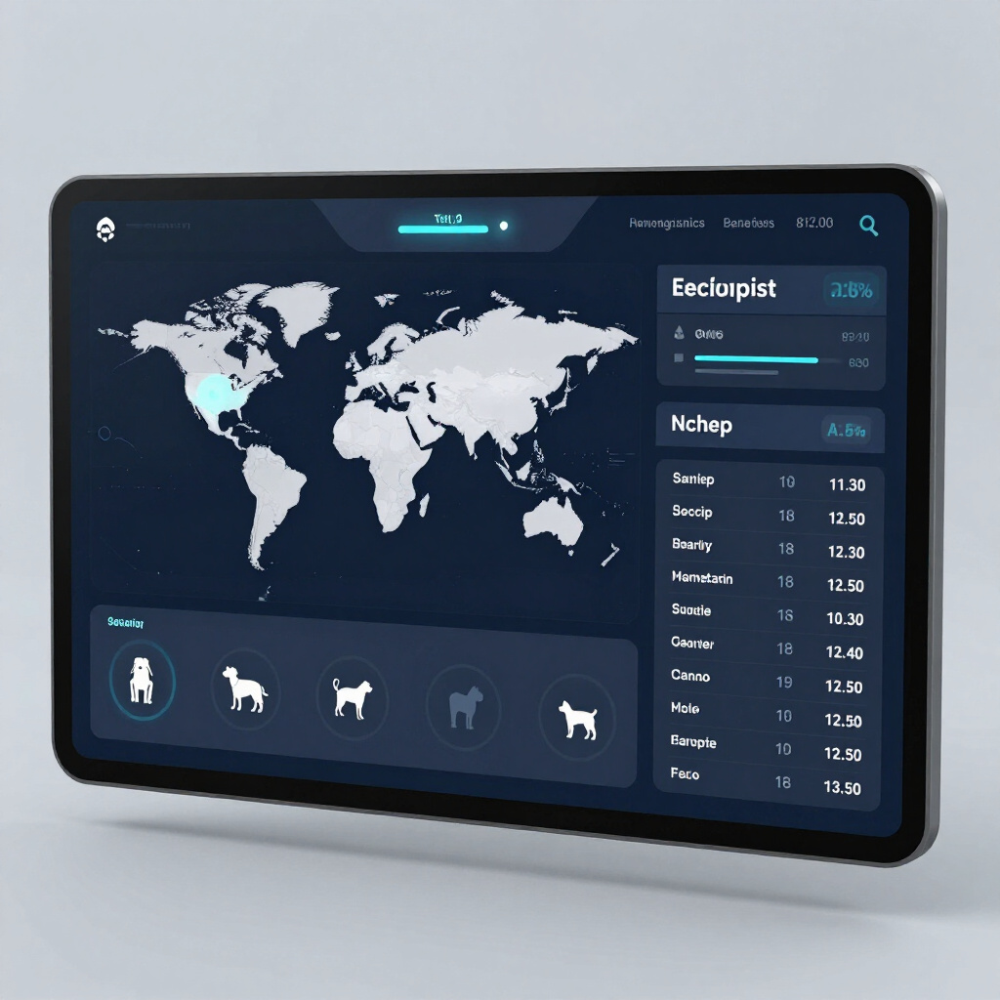
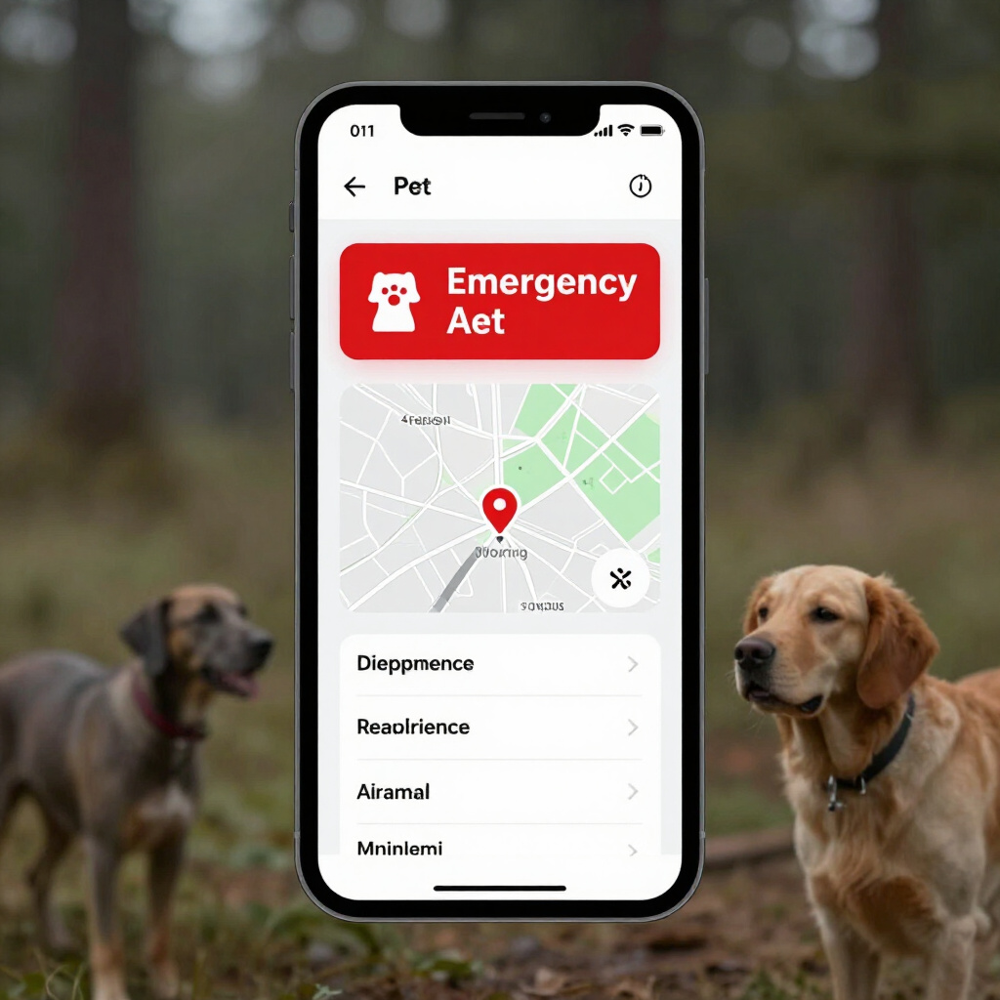

Premium
Designed for pet owners who demand the absolute peak of registry services. Premium integrates high-tech surveillance alerts, seamless documentation management, and direct vet connectivity into a single professional ecosystem. It is the definitive standard for maximum security, ensuring your pet is protected by the most advanced Trackyn features available today.

1. Registration
The foundation of Premium Tier security. Our streamlined registration process links your pet's microchip ID to a secure, global mainframe. Follow these steps to ensure total coverage:
- 1 Identify microchip number.
- 2 Connect owner and pet bio-data.
- 3 Sync with global recovery network.
- 4 Activate 24/7 security monitoring.
Your pet's identity is now permanently etched into the world's most advanced rescue infrastructure.
Register2. Search Registry
Premium users gain unrestricted access to our unified global database. Perform instant microchip lookups through our high-speed technocratic interface to retrieve pet identity and medical records in real-time. This advanced search capability bridges critical time gaps during rescue operations, ensuring immediate identification and cross-border security protocols are always at your fingertips.
Search
3. Report Lost Pet
Premium members activate a high-priority digital search network. One click alerts the concerned network immediately.

4. Update Pet/Owner Details
Maintaining accurate information is vital for the integrity of our technocratic registry. Premium members have exclusive, real-time access to modify their pet's bio, medical notes, and primary owner contact details. Our secure management infrastructure ensures every update is encrypted and instantly synchronized across our global scanning modules, keeping your connection with your pet unbreakable.